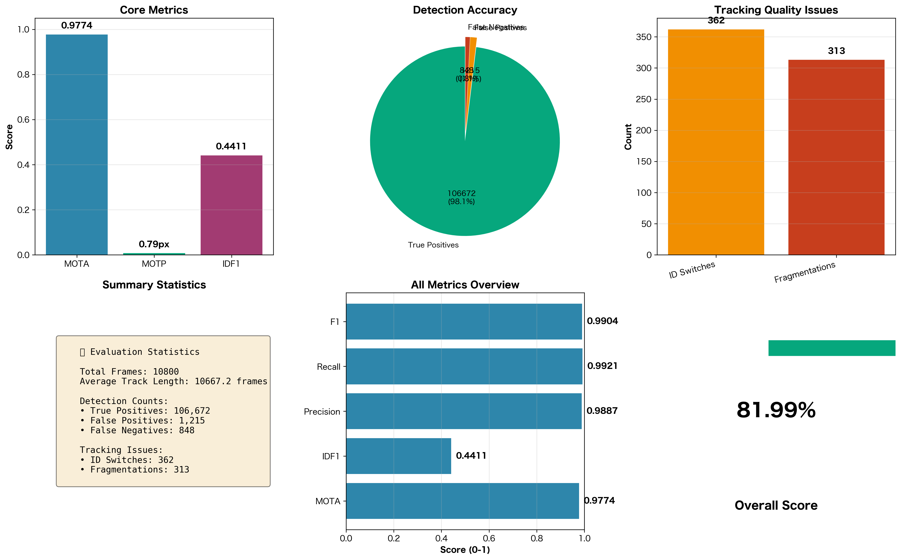

📊 総合評価スコア
MOTA
0.9774
🟢 優秀
Multiple Object Tracking Accuracy
IDF1
0.4411
🔴 要改善
ID F1 Score
総合スコア
81.99%
🟡 良好
Weighted Average Score
📈 詳細メトリクス
MOTP (Position Error)
0.79 pixels
平均位置誤差（低いほど良い）
Precision
0.9887
検出精度: 106,672 / (106,672 + 1,215)
Recall
0.9921
検出再現率: 106,672 / (106,672 + 848)
F1 Score
0.9904
PrecisionとRecallの調和平均
ID Switches
362
ID切り替わり回数（低いほど良い）
Fragmentations
313
トラック断片化回数（低いほど良い）
📊 可視化グラフ
📋 統計サマリー
| 項目 | 値 | 説明 |
|---|---|---|
| Total Frames | 10,800 | 処理された総フレーム数 |
| True Positives | 106,672 | 正しく検出・追跡できた数 |
| False Positives | 1,215 | 誤検出数 |
| False Negatives | 848 | 見逃し数 |
| Average Track Length | 10667.2 frames | 平均トラック長 |
| ID Switches Rate | 3.35% | フレームあたりのID切り替わり率 |
| Fragmentation Rate | 2.90% | フレームあたりの断片化率 |